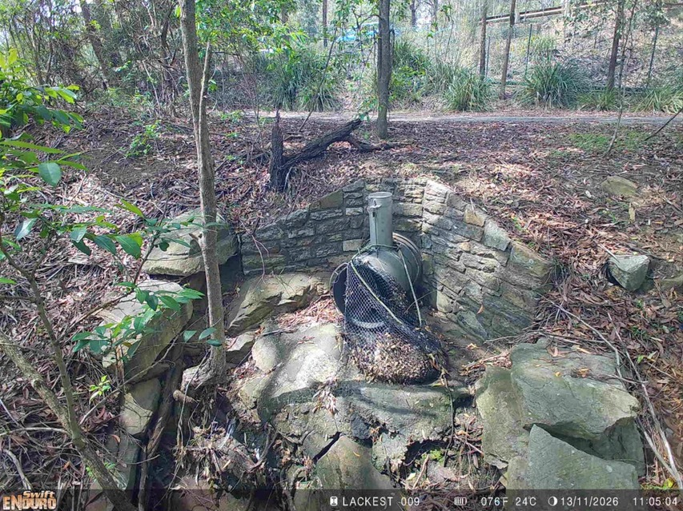
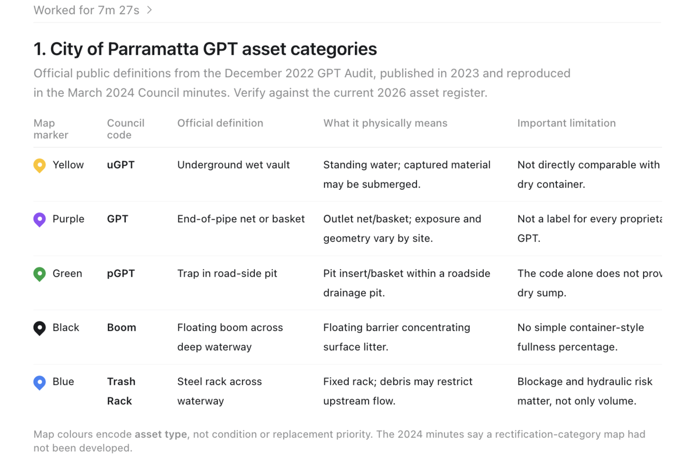
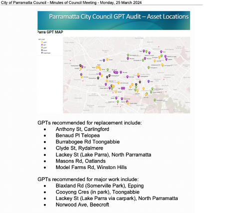
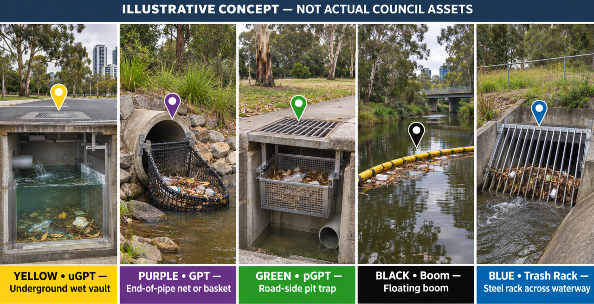

What we know, and where it came from
From Council's SME session (Dr Paul Hackney, 9 Nov 2026)
- About 35–40 GPTs. About 15 have cameras; about 10 work; a repair run is planned.
- One photo a day into SCADA, cameras in place 1–3 years. About 90% of days nothing changes.
- One officer reviews the photos for about 15 minutes a day. No weekend or holiday cover. That officer is on leave until mid-January.
- GPTs without cameras: cleaned about every three months, after big storms, or from experience of each trap's rainfall threshold.
- Contractors clean and repair. Underground units need a truck per load; nets are small.
- Nets detach by design when full and hit by another surge. Intervene at 70–80%.
- Email alerts with an image and an arrow on the problem; officers don't want to watch a dashboard. Expect one a week or fortnight.
- Trigger must allow for flood risk: a clean can't be arranged the day before a storm.
- Alert when the camera can't see, so a person can restore the view.
- Non-camera sensors welcome; 4G coverage limits image quality. Synthetic data is fine.
- Nice to have: learn each trap's fill behaviour from rain and cleaning records; route the crew.
Council's camera wall and the net nobody saw

SCADA "GPT Cameras" page: 14 camera tiles (Lackey St West and East, Lake Parra Res, Forest Cl, James Ruse Dr 1 and 2, Shirley St, Bettington Rd, Ridge St, Anthony St, Norwood Ave, Sturt St, Willmott Ave, Charles St), several fogged or obscured, and 11 named sites with no image.

Lackey St West, 13 Nov 2026, 11:05. Net torn and collapsed onto the rocks.
Council's GPT categories and the 2022 audit

Asset codes and map colours from the December 2022 GPT Audit, reproduced in Council minutes of 25 March 2024. To check against the 2026 asset register.

Recommended for replacement: Anthony St Carlingford, Benaud Pl Telopea, Burrabogee Rd Toongabbie, Clyde St Rydalmere, Lackey St (Lake Parra) North Parramatta, Masons Rd Oatlands, Model Farms Rd Winston Hills. Major work: Blaxland Rd Epping, Cooyong Cres Toongabbie, Lackey St (via car park), Norwood Ave Beecroft. Three of these are camera sites.

Illustrative concept of the five types, labelled as not actual Council assets.
Research visuals


Public records
- Council minutes, 25 March 2024: GPT Audit asset locations and replacement priorities.
- Asset Management Plan 2027–2036: 40 GPTs, 13 other pollution control devices; service measure "emptied at optimum frequencies".
- Annual Report 2024/25, Appendix 1: traps "cleaned quarterly and following significant rain events".
- GIPA Contracts Register, 30 Sep 2026: Urban Asset Solutions holds Part A, Pollution Control Assets, of the stormwater maintenance panel.
- Smart City & Innovation Strategy 2024–2033; Council AI Plan motion (Feb 2026).
- CSIRO GPT sensors research and the Smarter, Cleaner Sydney Harbour trial: low-cost non-visual fullness sensing. Per Paul, that trial instrumented an underground GPT; the net cameras are Council's own operational installs.